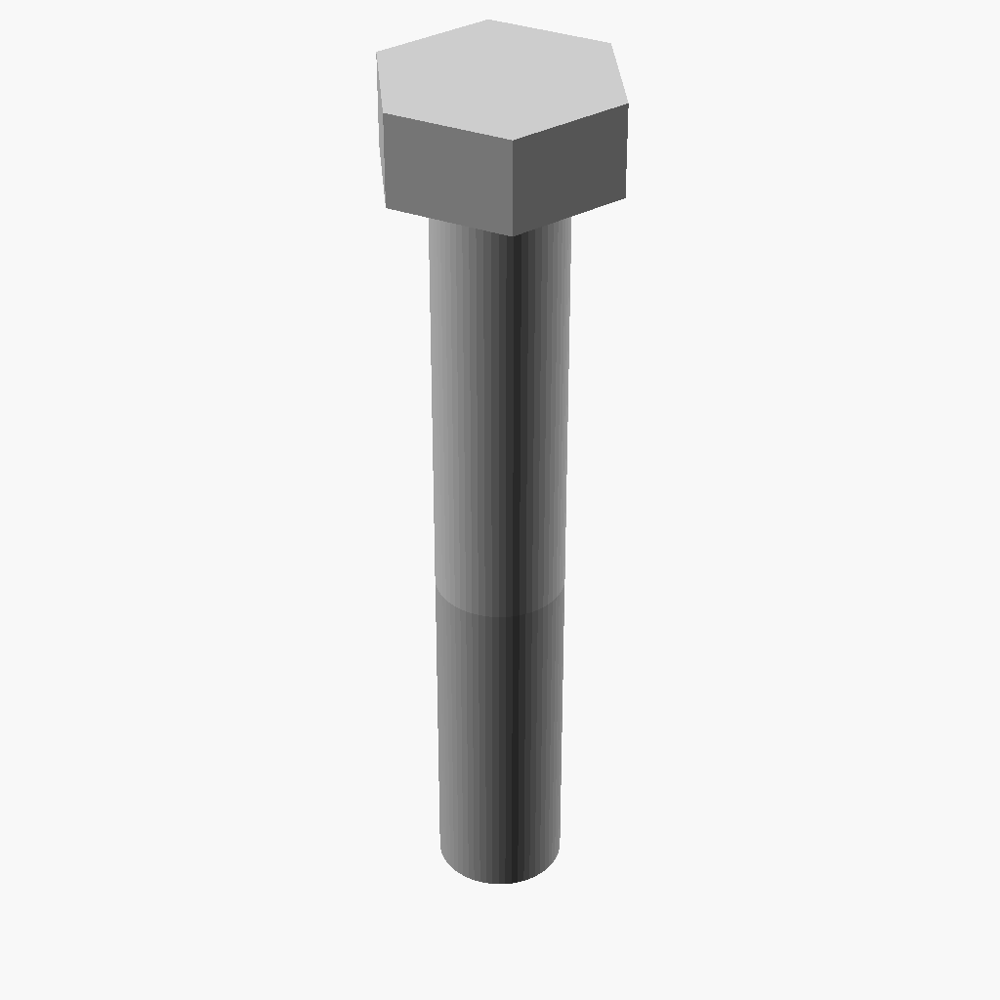
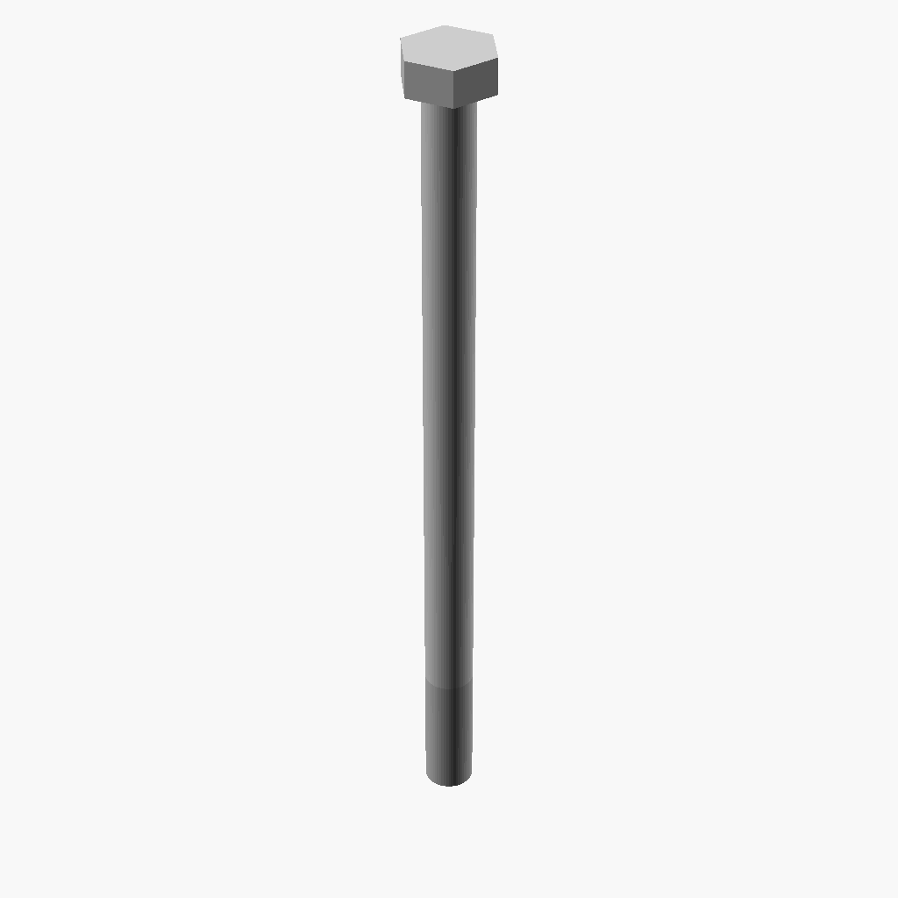

bolts revision 7493
^ Parts infobox ^^
| image | Bolt-thumb.png |
| designers | [[user:tim|Timothy Schmidt]] |
| date | 2019 |
| vitamins | |
| materials | |
| transformations | |
| lifecycles | |
| tools | [[metal_lathes|Metal lathes]] |
| parts | |
| techniques | |
| stl | |
| git | |
Introduction
Fastening two or more parts together sometimes requires special tools, electricity or compressed air, sometimes damages the parts themselves, and sometimes cannot be undone.
Fastening two or more parts together should be quick, easy, produce a strong joint, and be a fully reversible process.
Challenges
Bolts of different lengths are required to join one, two, and three thicknesses of frames to brackets, panels, and each other.
The combination of weld nuts and furniture bolts suggested in How to Build With Gridbeam loosens rapidly and structures built with them begin to wobble quite quickly. A drop of loctite on each nut's threads would help.
<youtube>tkEVwpl2S4Q</youtube>
Approaches
A selection of nuts and bolts have been chosen to interoperate with various frames and are listed in the Parts section.
Replimat is currently using hex head bolts and nylock nuts to address the loosening issue.
Parts
8mm frame
M3xXX, M3xYY, M3xZZ bolts
38.1mm frame



40mm frame
M12x50, M12x90, M12x130
100mm frame
M25xXX, M25xYY, M25xZZ bolts
Life cycle
Degenerative transformation
Long bolts can be cut to form shorter bolts.
Last use
Stripped, bent, or abraded bolts degrade to abrasive pellets for ball mills.
Suppliers
References
- Wikipedia: ISO metric screw thread
- NUT JOB | Nut, Bolt, Washer and Threaded Rod Factory
- Metric screw measuring device - M2/2.5/3/4/5 4-50mm
- Metric Screws Quick Measure jig M6 - M14
- Table of design properties for metric hexagonal bolts M5 to M39 (stress area, shear strength, tensile strength, bearing strength)
- Metrication.com: Metric Fasteners